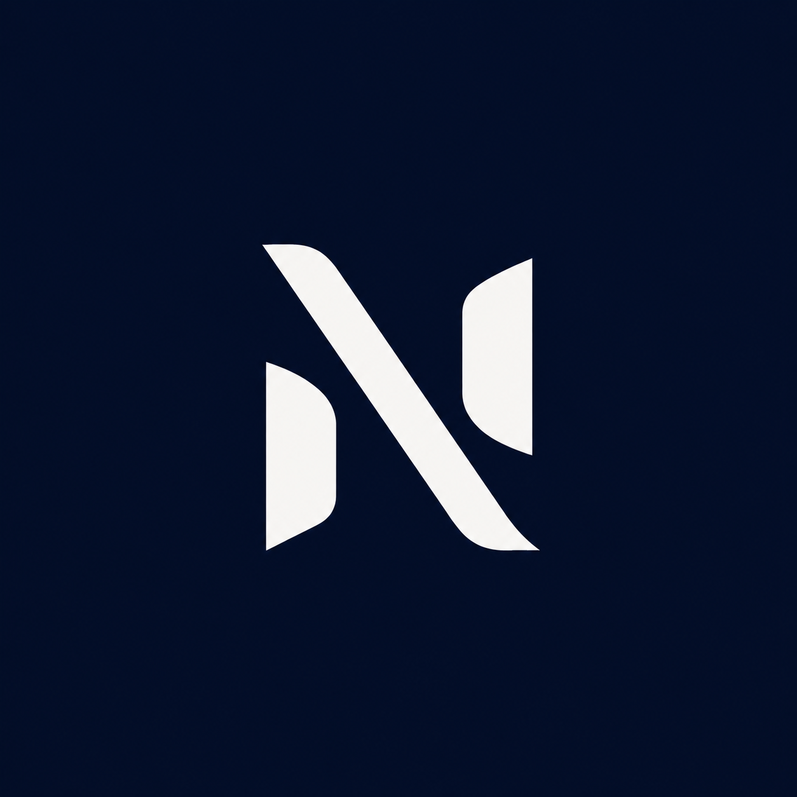

Riktning
Vi sätter mål, målgrupp, sidor och vilket intryck hemsidan ska ge.

NyMarkDigitalVi sätter mål, målgrupp, sidor och vilket intryck hemsidan ska ge.
Vi bygger en ren struktur med tydliga sektioner, texter och bilder.
Hemsidan testas, publiceras och kan uppdateras när portföljen växer.